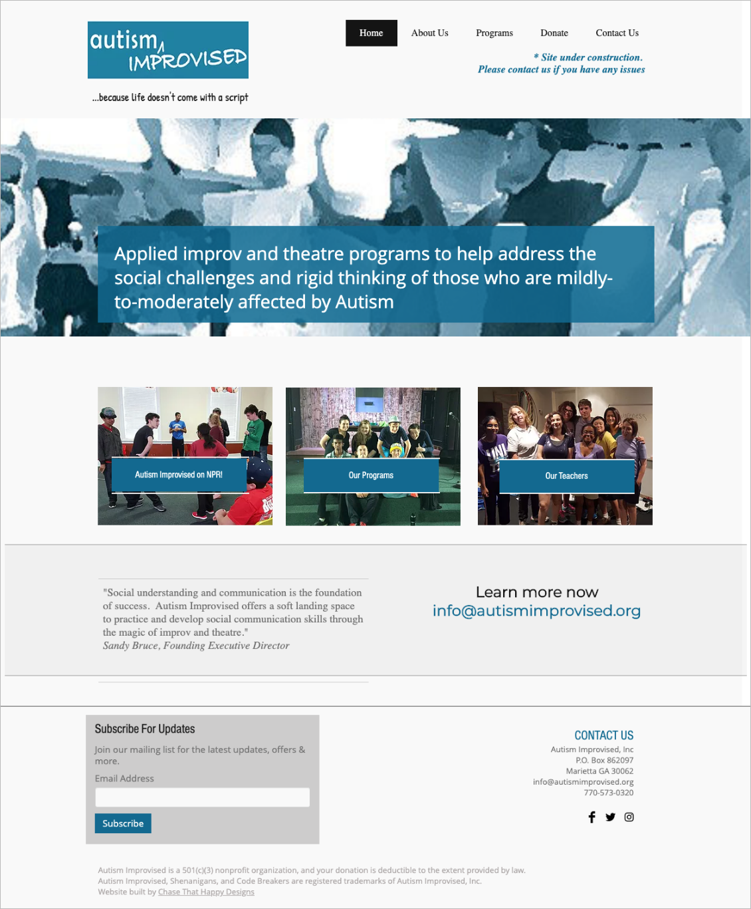
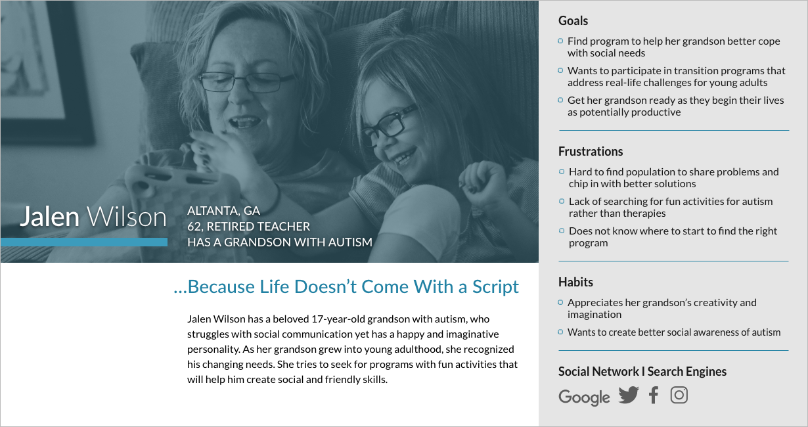
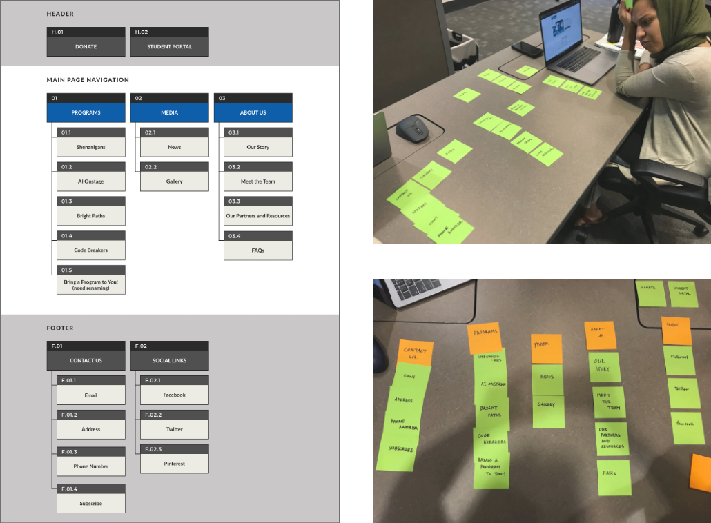
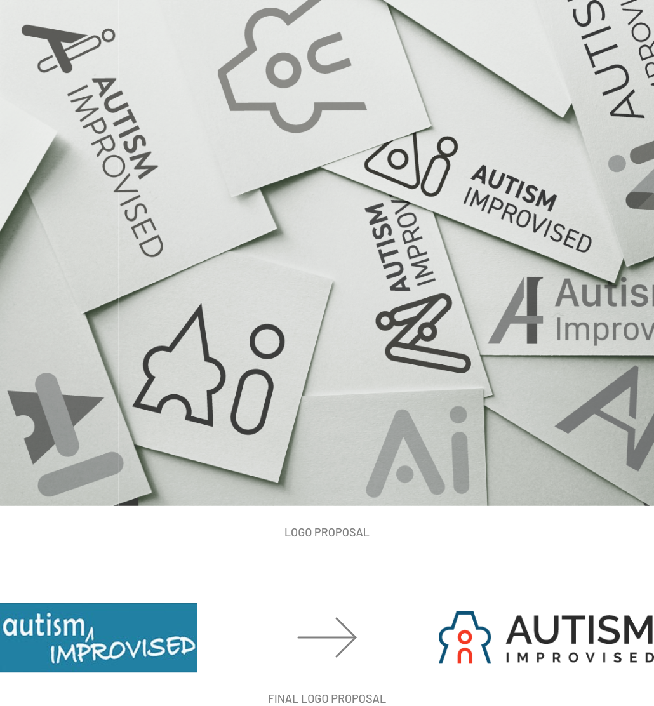
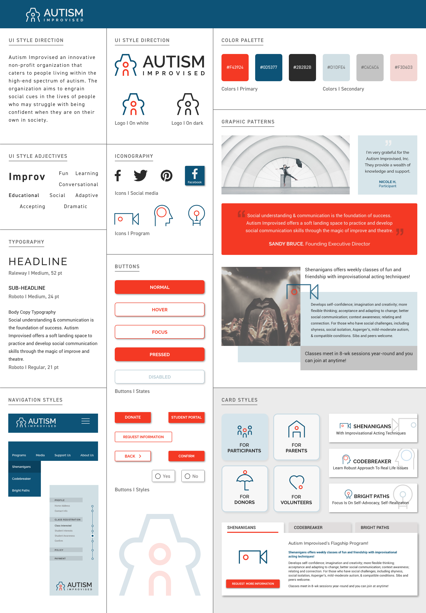
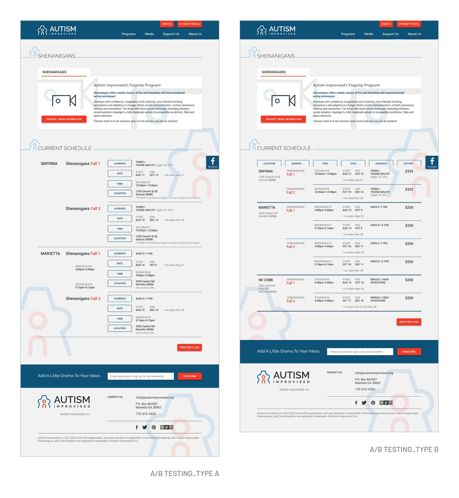

Tae Yun Koo
UX UI Designer. Graphic Designer.
AUTISM
IMPROVISED
UX UI REDESIGN CASE STUDY
Responsible for choosing a non-profit organization and executing a high-fidelity responsive web design
solution.
MY ROLE
Brand Design / Information Architecture / Responsive Web Design
TIMELINE
08/08/19 - 08/28/19 (3 weeks)
TEAM
Tae Yun Koo / Jonathan Kaplan / Khadijah Khan
ABOUT AUTISM IMPROVISED
Autism Improvised is a non-profit organization that offers a soft landing space to practice and develop social
communication skills through the magic of improv and theatre.
They use the power of applied improv and theatre to help facilitate social communication skills and adaptive
thinking within people living with mild to moderate Autism. Using a two-pronged support system, AI places an
emphasis on gaining transitional skills to prepare individuals for entry into the competitive workforce, college,
and adulthood in general.
RESEARCH INSIGHT

Autism Improvised was designed to achieve a safe, fun, and beneficial experience for children and young
adults living with Autism.
However, we have observed that our product or service isn’t meeting these goals, which is causing confusion
towards registration and contacting staff.
We believe adjusting navigation, sprucing up the user interface, and improving the overall experience for
will achieve higher turn around and happier participants, making Autism Improvised as successful as they can
be.
USER PERSONA
After researching more into the use cases of Autism Improvised as a site and through our conversations with the
stakeholders, we were able to establish user persona.
To find a safe place for her grandson who is living with
autism, Jalen Wilson wants her grandson to be able to recognize and learn social clues with people who are similar
so
that she can feel safe and confident when finally attends college next fall.

INFORMATION ARCHITECTURE

Card sorting method was used to establish a more fluid information architecture. Using insights
gathered from user research strategies, we identified key aspects of the site that needed enhancement: Structure of
home page / Program descriptions / Participant portal and information gathering processes
STYLE GUIDE
We desired the User Interface to communicate the true essence of the organization.
The original logo was not projecting the theatrical aspect of Autism Improvised,
which could lead to some confusion for potential students.

The outside A is styled as a puzzle piece to stay true to the purpose of Autism Improvised, but also to elicit the
feeling of a stage, with its centerpiece being the user.

As we were developing our style guide, we desired to
maintain some of the primary characteristics but iteration was important for increasing their brand awareness.
Iconography mirrors the new logo created.
USER TESTING
While designing the prototype, we realized that the way we presented the schedules for each program
could be confusing for our users. We designed two different ways of presenting the event logistics and tested.

Through our tests, we found that users prefer a chart-typed B to see all of the
alternatives, rather than the “info-only” designed type A.
PROTOTYPE
FUTURE DEVELOPMENT
Spending more time researching more people, especially users of Autism Improvised from all points of view
(volunteers, parents, participants, teachers, etc) could have been beneficial to establish more evidence to
support the process and design.